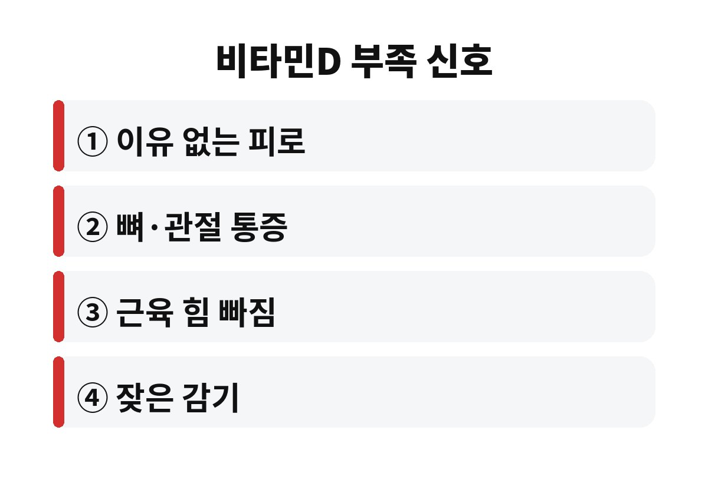
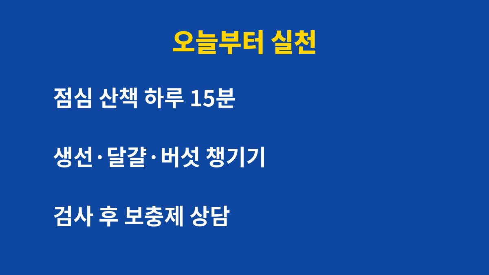

비타민D 부족 증상은 이유 없는 피로, 뼈와 관절 통증, 근육 힘 빠짐이 대표적이다. 사무실에서 하루 종일 일하고 퇴근하면 이미 해가 져 있는 직장인이라면, 11월부터 햇볕을 하루 15분도 못 쬐고 지나가는 날이 훨씬 많아질 수 있다. 그렇다면 내 몸은 어떤 신호를 먼저 보낼까?
비타민D는 칼슘이 뼈에 잘 붙도록 돕고 근육과 면역 기능에도 관여하는 영양소이다. 그래서 부족해지면 한 곳만 아픈 것이 아니라 몸 전체가 은근히 무거워지는 경우가 많다.
가장 흔한 비타민D 부족 증상은 충분히 자도 풀리지 않는 피로감이다. 여기에 허리나 무릎 같은 뼈 주변이 뻐근하고, 계단을 오를 때 다리에 힘이 빠지는 느낌이 더해질 수 있다. 감기에 자주 걸리거나 기분이 가라앉는다고 느끼는 사람도 있다. 다만 이런 증상은 다른 원인으로도 생기므로 증상만으로 단정해서는 안 된다.

우리 몸의 비타민D는 상당 부분 햇볕을 받은 피부에서 만들어진다. 그런데 가을이 깊어지면 해가 짧아지고 햇빛의 각도도 낮아져 같은 시간 밖에 있어도 만들어지는 양이 줄어든다. 날씨가 추워지면 두꺼운 옷으로 피부를 가리고 바깥 활동도 줄이게 되니 부족해지기 쉬운 조건이 한꺼번에 겹치는 셈이다.
특히 출근과 퇴근 모두 어둑한 시간에 하는 직장인, 하루 대부분을 실내에서 보내는 사람, 자외선 차단제를 꼼꼼히 바르는 사람은 더 신경 쓸 필요가 있다. 나이가 들수록 피부에서 비타민D를 만드는 효율이 떨어진다는 점도 알려져 있어서 부모님 세대는 더 챙겨야 한다.
흔히 하루 15분 안팎의 햇볕 쬐기가 도움이 된다고 이야기한다. 다만 계절, 지역, 시간대, 피부색, 노출 부위에 따라 필요한 시간은 달라질 수 있어서 모든 사람에게 같은 시간이 맞는다고 말하기는 어렵다. 중요한 것은 유리창 안쪽이 아니라 실제로 바깥에서 팔과 얼굴이 햇볕을 받는 시간을 만드는 것이다.
가장 현실적인 방법은 점심시간에 건물 밖으로 나가 가볍게 걷는 습관이다. 해가 가장 높은 낮 시간대에 짧게 걷는 것이 퇴근 후 저녁 산책보다 훨씬 효율적이다. 반대로 한여름처럼 오래 쬐겠다고 무리하면 피부에 부담이 될 수 있으니 짧고 꾸준하게 하는 편이 낫다.
음식으로는 연어나 고등어 같은 기름진 생선, 달걀노른자, 말린 버섯류가 대표적인 공급원이다. 우유나 시리얼처럼 비타민D를 강화한 식품도 보조 수단이 될 수 있다. 하지만 음식만으로 충분히 채우기는 쉽지 않아서 많은 사람이 보충제를 떠올린다.
여기서 주의할 점이 있다. 비타민D는 지용성이라 몸에 쌓일 수 있고, 과하게 먹으면 오히려 문제가 생길 수 있다. 그러므로 광고만 보고 고용량 제품을 시작하기보다 혈액 검사로 현재 수치를 확인하고 의사나 약사와 상담해 용량을 정하는 것이 안전하다. 신장 질환이 있거나 복용 중인 약이 있다면 반드시 먼저 상담해야 한다.
검사를 받는 방법도 어렵지 않다. 동네 병원이나 건강검진 센터에서 혈액 검사로 비타민D 수치를 확인할 수 있고, 결과를 보면 부족한지 충분한지 객관적으로 알 수 있다. 수치가 낮게 나왔다면 의사가 생활 습관 교정과 보충 여부를 함께 안내해 준다. 막연한 불안감으로 영양제를 늘리는 것보다 내 몸의 상태를 먼저 아는 것이 시간과 비용을 모두 아끼는 길이다.
또 하나 기억할 점은 겨울철 실내 생활이 길어질수록 운동량도 함께 줄어든다는 것이다. 근육과 뼈는 쓰지 않으면 빠르게 약해지므로 햇볕 쬐기와 가벼운 걷기를 묶어서 실천하면 일석이조이다. 엘리베이터 대신 계단을 이용하고 점심 후 10분이라도 건물 밖을 한 바퀴 도는 습관만으로도 차이가 생긴다. 작은 실천이 쌓이면 몸이 먼저 달라졌다고 알려 준다.

정리하면 세 가지만 기억하면 된다. 첫째, 점심시간에 밖에서 짧게 걷는다. 둘째, 생선과 달걀, 버섯을 식단에 한 번 더 넣는다. 셋째, 피로와 통증이 오래간다면 검사를 받아 본다. 거창한 변화가 아니라 작은 습관이 겨울 컨디션을 가른다.
혹시 요즘 이유 없이 몸이 무겁다면 오늘 점심에 햇볕 아래를 15분만 걸어 보면 어떨까? 이 글이 도움이 되었다면 구독으로 다음 건강 정보도 받아 보길 바란다.
※ 이 글은 일반적인 건강 정보이며 진단이나 치료를 대신하지 않는다. 증상이 있다면 반드시 전문의와 상담하기 바란다.